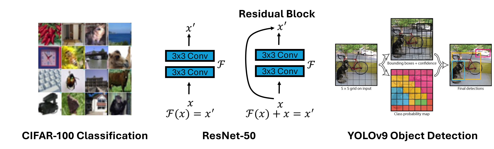
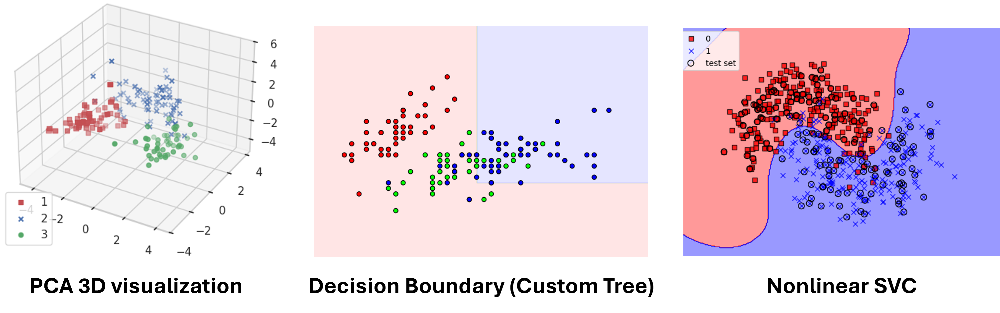
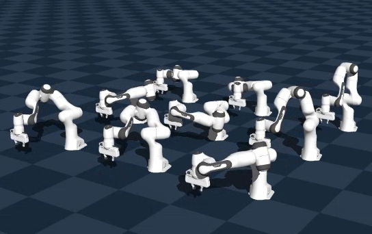

AUP Teaching Labs
AUP Teaching Labs provides four hands-on teaching labs that cover the major areas of modern AI and robotics, all running on AMD GPU acceleration. Each teaching lab is a series of progressive Jupyter notebook labs, no prior GPU setup required. Pick the one that matches your interest and start building.

From image classification with CNNs and ResNets to object detection (YOLOv9), segmentation (SegNet, SAM), multi-object tracking, and generative models (VAE, Diffusion). Train, evaluate, and visualise real vision systems in PyTorch.

Build machine learning knowledge from first principles. Start with classical algorithms (PCA, SVM, K-Means, Decision Trees, Regression), move into neural networks and word embeddings, then tackle CNNs, autoencoders, GANs, and a Transformer from scratch.

Go from tensors and gradients all the way to a working LLaMA-style decoder. Covers PyTorch fundamentals, every transformer component (tokenisation, attention, normalisation, FFN), efficiency techniques (FlashAttention, MoE, LoRA), training pipelines, and inference optimisation.

Get started with Genesis, a high-performance physics engine with native AMD GPU support. Load robots into simulated scenes, apply PD controllers, perform pick-and-place with Inverse Kinematics, and scale to hundreds of parallel environments for reinforcement learning.